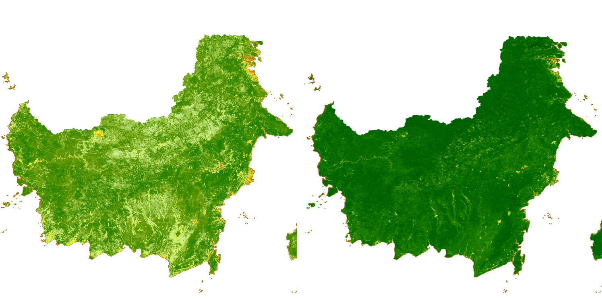
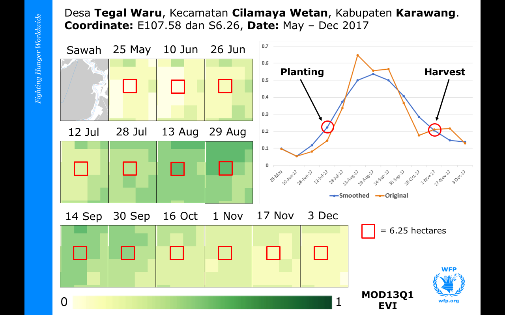
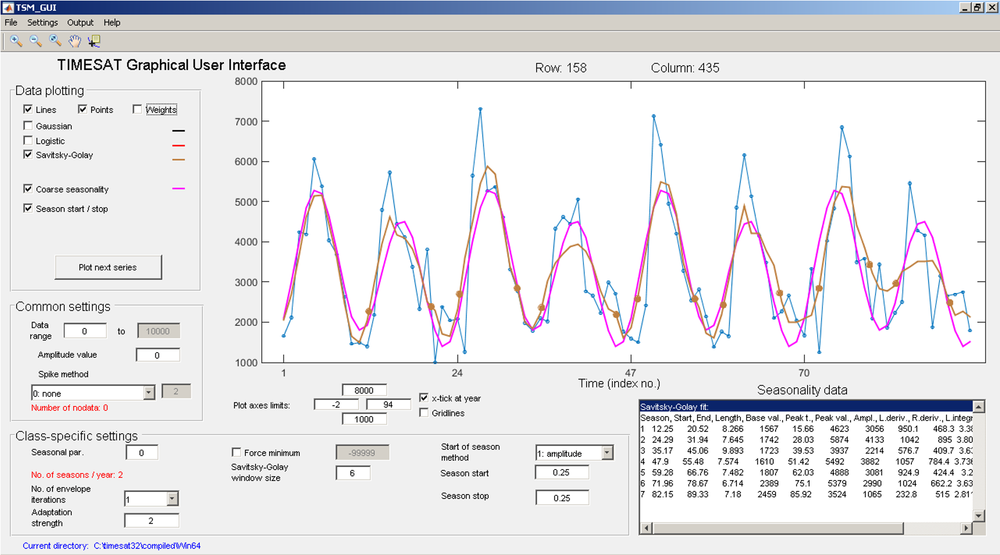
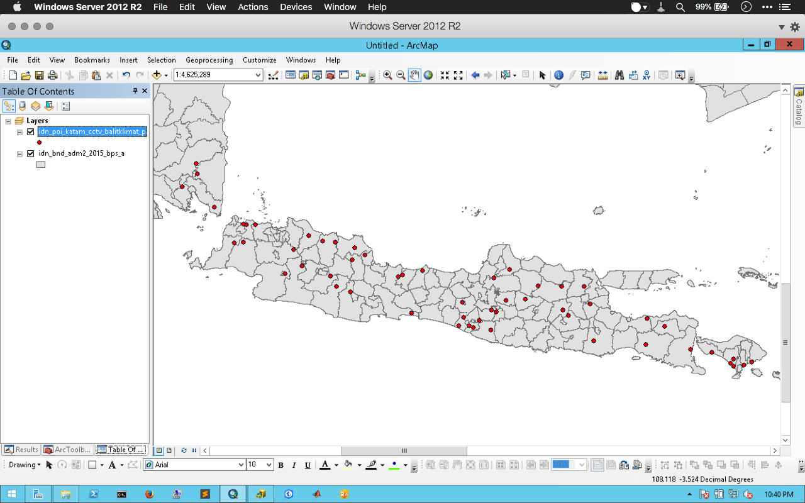

Satellite-based monitoring of growing season
Climate and vegetation data sourced from remote sensing satellites are widely used for agricultural monitoring. Most of the usage is focused on medium-low resolution data because it is associated with long-term data availability.
These data provide useful information for:
- Providing early warning when climate shocks occur against food security.
- Contextual analysis needed for planning interventions, for example: market operations when rice scarcity occurs.
- Climate change adaptation program.
Paddy growth stages and satellite data
In paddy cultivation, there are three growth stages, namely the vegetative (0-60 days), reproductive (60-90 days), and ripening stages (90-120 days). Water requirements in the three stages vary, namely in the stage of active tillers, maximum tillers, panicle formation, heading and flowering stages.
[caption id=“” align=“alignnone” width=“1024”][ ](https://www.mdpi.com/1424-8220/15/1/769/htm) Figure 1. Paddy growing stages (Source: https://www.mdpi.com/1424-8220/15/1/769/htm ) [/caption]
](https://www.mdpi.com/1424-8220/15/1/769/htm) Figure 1. Paddy growing stages (Source: https://www.mdpi.com/1424-8220/15/1/769/htm ) [/caption]
The above stages can be easily observed using remote sensing data, such as NOAA, MODIS, Landsat and Sentinel. To observe the changes in the crop growing stages, the easiest way is to use a vegetation index. The 4 data mentioned have similar characteristics from the temporal aspect, which allows an area to be crossed by satellite every 1-16 days period and has a vegetation index product.
Data from several satellites has many advantages, one of which is a very long collection of historical data. Some instruments (AVHRR and Landsat) provide information for more than 30 years, and MODIS is approaching 17+ years of observation, while some newer sensors (Sentinel) have become available since 2013 and it is estimated that this satellite mission will reach 40 years into the future. And of course all the data is freely available to the public.
Ideal remote sensing data characteristics for vegetation monitoring
Operational data production – routinely produce the same data products at a set time interval.
- Example: production a vegetation condition map each month.
Anomaly, Percent of Normal, Change, or Ranking Maps
- Provide historical context of how current conditions compare to the historical conditions for a specific location and time during the year.
- Easier to differentiate moderate, severe, and extreme drought events.
Data easily accessible and in multiple formats
- Digital data in analysis using GIS and computers
- Graphical maps that can be downloaded and printed for visual analysis
Vegetation Index
The Enhanced Vegetation Index (EVI) is an ‘optimized’ index designed to enhance the vegetation signal with improved sensitivity in high biomass regions and improved vegetation monitoring through a de-coupling of the canopy background signal and a reduction in atmosphere influences.
Whereas the Normalized Difference Vegetation Index (NDVI) is chlorophyll sensitive, the EVI is more responsive to canopy structural variations, including leaf area index (LAI), canopy type, plant physiognomy, and canopy architecture.
[caption id=“” align=“alignnone” width=“1495”] Figure 2. EVI and NDVI, July 2015 [/caption]
The data used for monitoring of paddy planting and harvesting area is MODIS EVI - MOD13Q1, which has a spatial resolution of 250m, temporal resolution 16 days and available from 24 February 2000. The MOD13Q1 data characteristics can be read at the following link: https://lpdaac.usgs.gov/products/mod13q1v006/
Agriculture monitoring in global and national level
International
USDA
Crop Explorer - https://ipad.fas.usda.gov/cropexplorer/imageview.aspx?regionid=seasia#
- PROBA-V and NOAA AVHRR
Global Agricultural Monitoring - https://ipad.fas.usda.gov/glam.htm
- MODIS and NOAA AVHRR
FAO
Global Information and Early Warning System - www.fao.org/giews/earthobservation/country/index.jsp?lang=en&code=IDN
- NOAA AVHRR and SPOT Vegetation
GEO Group on Earth Observation
Geo-GLAM Crop Monitor - https://cropmonitor.org
- MODIS MOD09CMG
Indonesia
BPS - BPPT
Area Sampling Frame - https://ksa.bps.go.id/index.php
- Field check using mobile data collection
BPPT
iSky - http://pii.or.id/wp-content/uploads/Junal_PII_2016_Sidik_Mulyono_Edited.pdf
- MODIS and Landsat 8
LAPAN - Litbang Kementerian Pertanian
Standing Crop dan Kalender Tanam (KATAM) – http://katam.litbang.pertanian.go.id/main.aspx
- MODIS MOD09 and Sentinel 2
Pusdatin - Kementerian Pertanian
SIMOTANDI – http://sig.pertanian.go.id
- Landsat 8
Methodology
State of planting and harvesting estimates were determined by importing MODIS Vegetation (MOD13Q1 - 16 days and 250m resolution) data into TIMESAT (http://web.nateko.lu.se/timesat/timesat.asp) – a program for analyzing time-series satellite sensor data. TIMESAT conducts pixel-by-pixel classification of satellite images to determine whether or not planting has yet begun. This process was followed for all of Indonesia over multiple years in order to evaluate current planting vis-à-vis historical years from 2001 - 2016.
[caption id=“” align=“alignnone” width=“512”] Figure 3. TIMESAT parameters [/caption]
Figure 3. TIMESAT parameters [/caption]
Some of the seasonality parameters generated in TIMESAT: (a) beginning of season, (b) end of season, (c) length of season, (d) base value, (e) time of middle of season, (f) maximum value, (g) amplitude, (h) small integrated value, (h+i) large integrated value.
The blue line is the real EVI value and red is EVI value after smoothing. The following figure shows the differences in MODIS EVI that have not and have been smoothing.
[caption id=“” align=“alignnone” width=“1264”] Figure 4. Smoothed and un-smoothed difference [/caption]
Figure 4. Smoothed and un-smoothed difference [/caption]
The process of monitoring the status of paddy planting and harvesting using a vegetation index can be seen in the following figure.
[caption id=“” align=“alignnone” width=“1280”] Figure 5. Monitoring of growth stages based on EVI [/caption]
Data analysis
The following are the steps to get information on rice planting and harvesting area.
Data preparation
- Download EVI data.
- Mosaic, Resample, Extract, Clip.
- Clip with paddy field area.
- Convert data to Band Interleaved by Line (BIL) format
TIMESAT phenology process
- Prepare data list and settings for each year.
- Running TIMESAT and configure class specific setting, see Figure 6.
Extract seasonality parameters
- Start of Season
- Mid of Season
- End of Season, etc.
Post-processing
- Create header (HDR) file to read TIMESAT output.
- Convert BIL to GeoTIF.
[caption id=“” align=“alignnone” width=“1680”] Figure 6. TIMESAT user interface [/caption]
Example of TIMESAT output
Start of Season (SoS), Mid of Season (MoS), Length of Season (LoS) and End of Season (EoS)

Validation
Ideally validation is conducted via ground checking. But sometimes time and cost constraints make data validation in the field is rarely done. How to deal with this?
[caption id=“” align=“alignnone” width=“1280”] Figure 9. CCTV location [/caption]
The Ministry of Agriculture through the Integrated Planting Calendar (KATAM) activity - http://katam.litbang.pertanian.go.id/main.aspx - has installed 55 CCTVs scattered in several paddy fields in Java - Bali and Lampung which can be accessed by the public free via the website above on the Monitoring menu.

{kind=link}
{kind=link}
{kind=link}
{kind=link}
{kind=link}
{kind=link}
CCTV shows the same information as released by TIMESAT
Notes
Data: MODIS EVI and Paddy cultivation area
Software: in addition to ArcGIS, some analyses also use open-source software such as GDAL, python, TIMESAT to process data, HDF libraries and NetCDF to read MODIS data.
Back to top